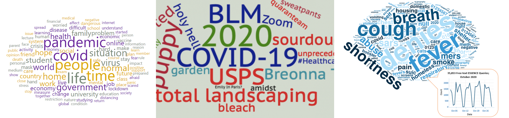
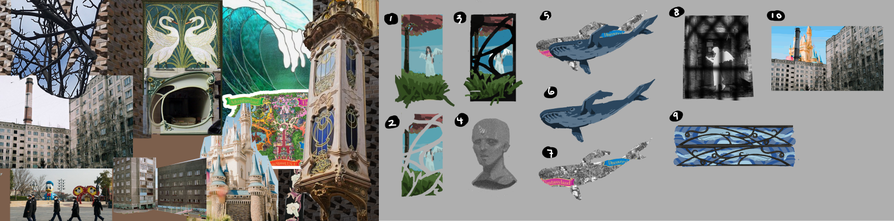
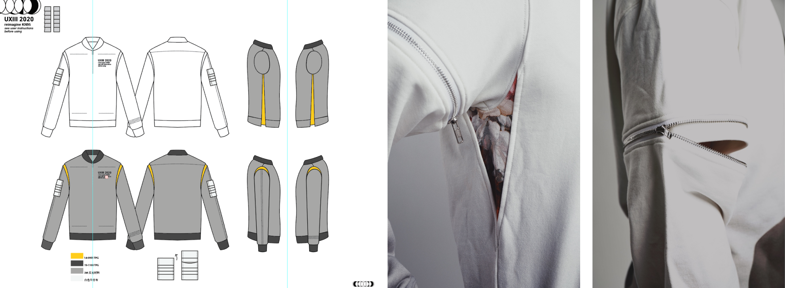
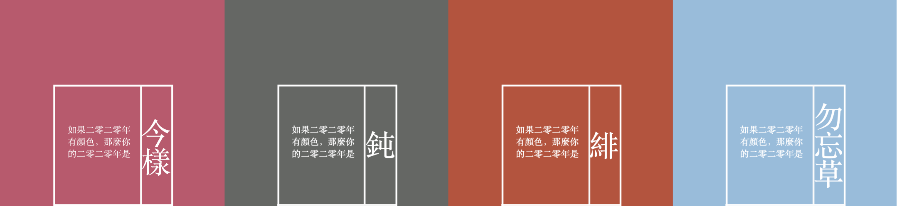
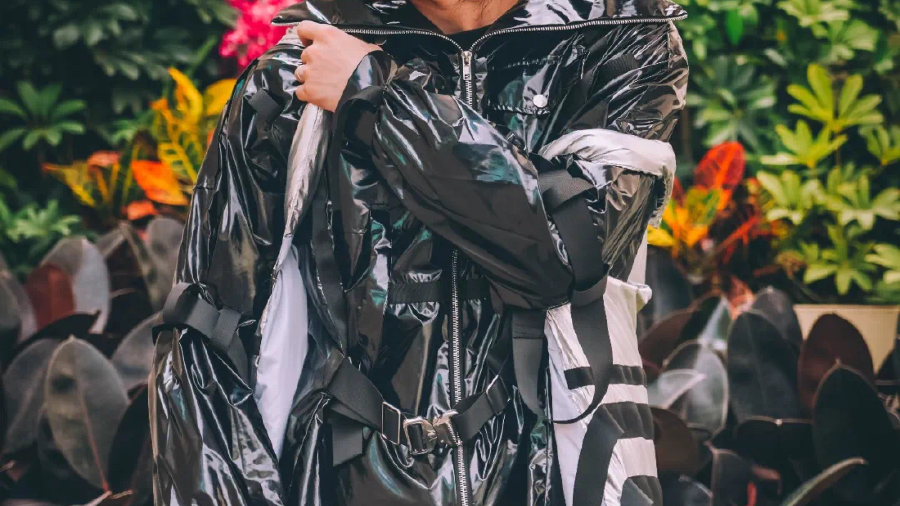
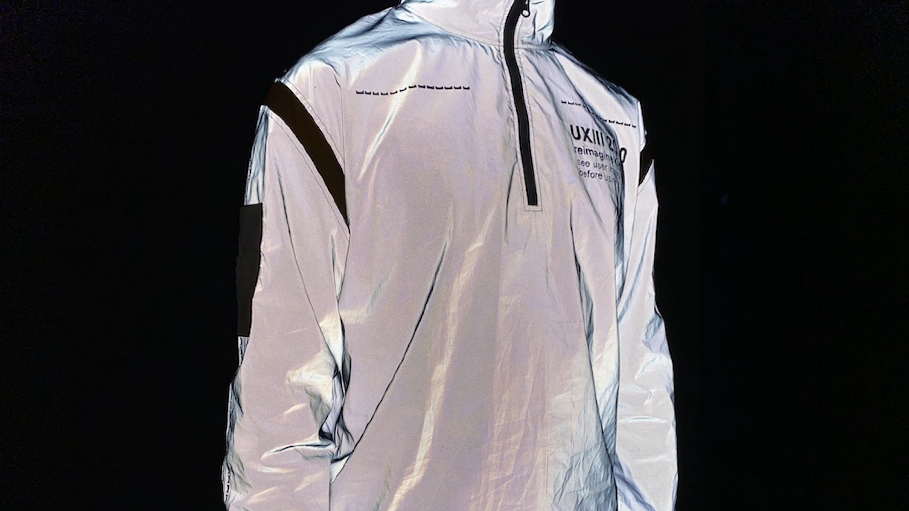
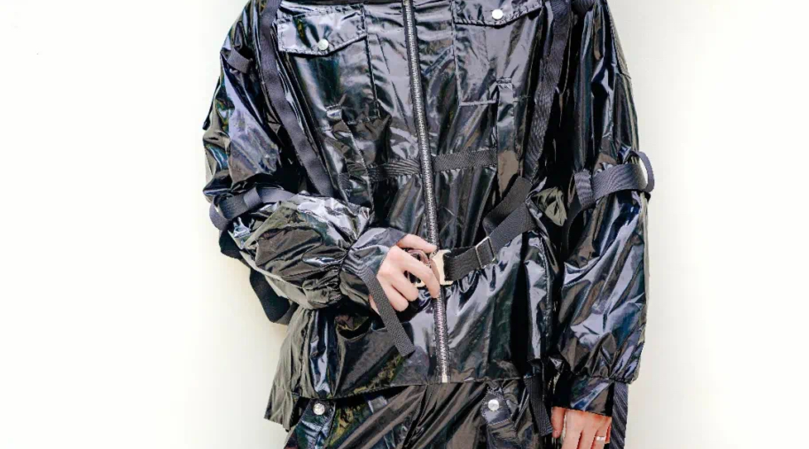
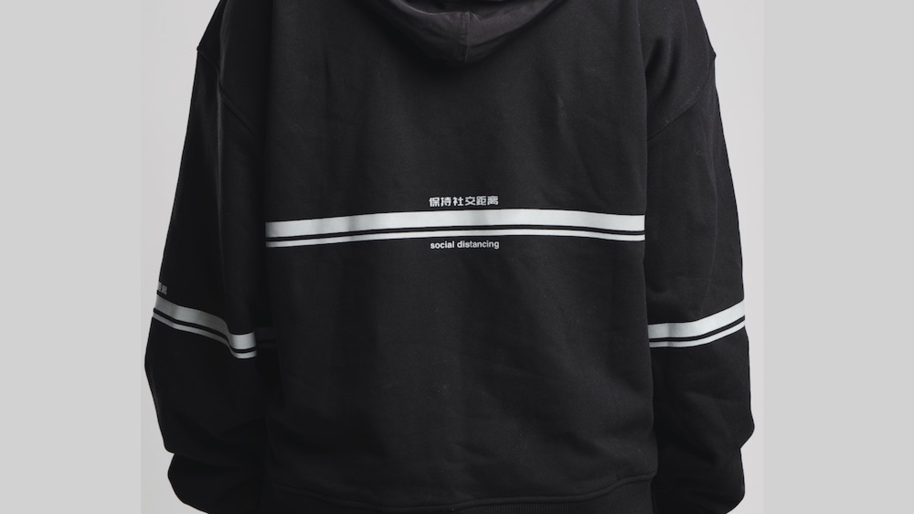
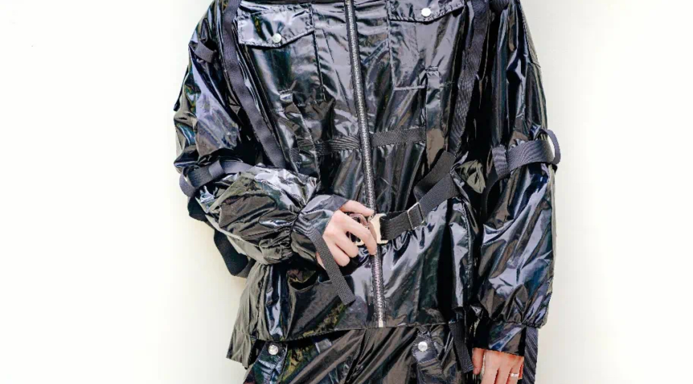
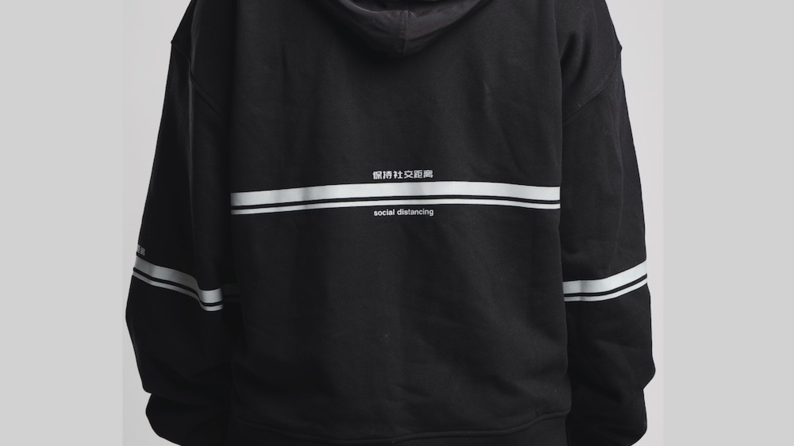

History recorded not on paper, but on fabric.
Initiative
2020 was a year to remember, marked by world-changing events that evoked a whirlwind of emotions—sadness, anger, desperation. While news, documentaries, and social media captured the facts, these feelings called for a more artistic and publicly accessible way to be preserved.
This project aimed to create a socially conscious clothing brand that reflected the defining moments of 2020. Combining avant-garde fashion with storytelling, it sought to make a cultural impact. Operating as a startup, it sold clothing products to artists and celebrities, with all profits donated to COVID-19 relief organizations.
Research & Ideation
We began by conducting market research to define our target audience. We chose to focus on celebrities and artists due to their higher tolerance for bold artistic clothing and their potential to bring exposure aligned with our objectives. During the ideation phase, we used a diamond-shaped process, starting by gathering data and keywords about major 2020 events, including COVID-19, wildfires, and social justice movements.
From these topics, we derived key design elements that became the core of our products. Using these elements, we diverged into a variety of specific design concepts, ultimately selecting the most impactful ones as the foundation for our final products.
Product Design & Development
We designed a clothing collection inspired by social themes, carefully adapting the designs to real-world constraints while prioritizing sustainability. For example, a key design element was Rainbow Reflective fabric, symbolizing the "silver lining" amidst challenges. This material, composed of micro glass beads, adhesives, and a base fabric, reflects light to create a striking aurora-like effect when illuminated, appearing black in daylight and multi-colored at night. To align with our sustainability goals, we selected recycled polyester as the base fabric and worked with suppliers using eco-friendly adhesives and energy-efficient production methods. Prototypes were crafted with attention to material properties and production limitations, and through collaboration with suppliers, we produced official products ready for market distribution.
Marketing
We developed marketing strategies that included online blogs and interactive features such as “Test Your Annual Color” to engage audiences creatively. Additionally, we collaborated with artists and celebrities, securing over 100 endorsements at public events to amplify the brand’s visibility and impact.
Outcome
• Products worn by over 100 celebrities and artists, generating millions of online impressions.
• Achieved over $30,000 in revenue, with all profits donated to COVID-19 relief organizations.
• Strengthened skills in product design, marketing, and leadership, successfully transitioning from concept to market.
Gallery
  


